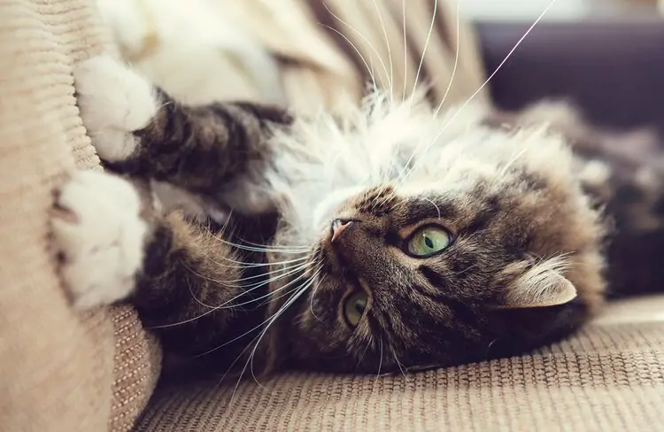

How to Stop a Cat from Scratching
Written By: Author Name Nov 17 2021
Cats are generally low-maintenance pets that provide lovable, furry companionship. However, not every part of owning a cat or a kitten is easy. As with any pet, you take on many responsibilities when you adopt them. These include giving them exercise, feeding them, and brushing them. You also have to work with them on any behavioral problems that they have. You need to have patience and willingness, as there’s no such thing as the perfect pet.
One of the most destructive and irritating behaviors that a cat can have is when they use their sharp little claws to scratch up your furniture. Why is your cat scratching your couch, and how do you stop this negative behavior?
This article covers the reasons that cats scratch, declawing your cat, the methods that you can use to control the behavior, and the steps to go from scratched couches to scratching posts.
Cats and Scratching Behavior
The best way to deal with a negative behavior in any pet is to understand why they do it. If you can redirect that focus or change the need for the pattern, then it is generally a much faster process.
Cats are natural scratchers. It is essential to understand that you aren’t trying to train out their instinct to scratch, you just want to redirect their attention away from the furniture.
Put socks or nail caps on their feet.
Instead of removing your cat’s claws entirely, you can protect your furniture by temporarily dulling them. Nail caps cover their sharp nails and effectively blunt them. They can still use their nails, but they won’t be destructive.
You can use adhesive with the caps. That way, you can slide one over each nail, and it will stick on for longer.
Some people like the translucent caps so they don’t make their cat’s paws look odd, while others prefer vibrant colors so it is easier to find them when they fall off.
Nail caps are excellent while you work through the training process because it lowers the risk of anything happening to your couch while you and your cat work through the process.
Provide them a scratching “outlet.”
Finally, it is essential to provide them an outlet to take their scratching out on. Even a cat that has been declawed will continue to try and scratch, demonstrating that it is an ingrained and entirely natural tendency.
Scratching posts are the most common outlets that people give their cats and are essential to their training.